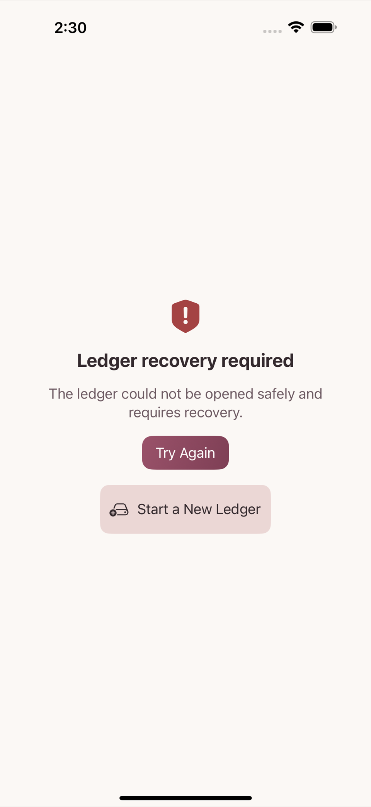

On the Ledger Backup and Restore screen in Settings, tap Create Ledger Backup to export everything recorded so far as a single backup file. If a backup already exists, Create Backup Again makes a new one from the current state. A backup file can contain transactions, accounts, budgets, recurring rules, and message recognition rules — and, if you choose, receipt attachments too.
Tap Restore ledger from backup on the same screen, pick a backup file, and run Restore. Restoring rolls the current ledger back to the state it was in at the time of the backup, so before it runs, one more safety backup of the current state is created automatically — if you do not like the result of the restore, you can go back to that safety backup.
To move to a new device, or to bring two devices' ledgers into line, use Send to a device. The transfer runs over an encrypted channel, and if it stops or fails partway, the data on this device is left exactly as it was. Keep the screen open until the transfer finishes.
This is not a button you can press from the Settings screen in normal use. It is the second button, next to "Try Again", on a separate recovery screen that appears only when the ledger could not be opened normally. Choosing to start a new ledger there does not make the existing ledger vanish on the spot — it is kept as a recovery copy — and one more confirmation screen appears first, requiring you to type a confirmation phrase before it proceeds.

If you want to start from an empty ledger on purpose rather than because something broke, you do not need to wait for the route above. Use Reset Data (reachable directly from Settings), covered in chapter 14 — the two routes differ both in the screen you reach and in the conditions that get you there, and either way you must make the backup you need before running it.